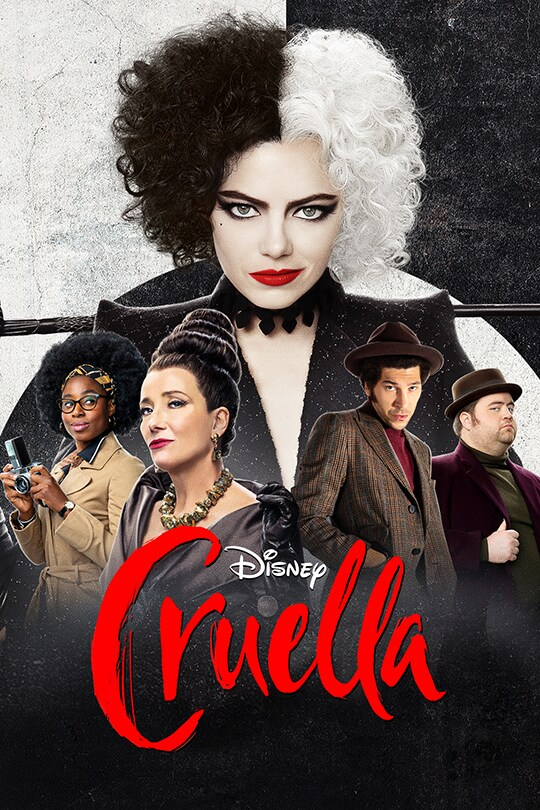

Call Me by Your Name is a poignant coming-of-age film that delicately explores the transcendent summer romance between a young man and an older academic staying at his family's Italian villa.

Howl's Moving Castle is a captivating animated film where a cursed young woman, Sophie, encounters the enigmatic wizard Howl and his magical moving castle in a spellbinding world of war and enchantment.

Cruella" is a live-action Disney film that explores the backstory of the iconic villain Cruella de Vil, portraying her transformation from a young fashion designer named Estella to the infamous character known for her unique style and obsession with Dalmatian fur.
